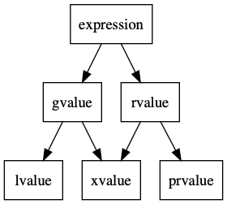

// `override` : show explicitly structBase { virtualvoidfoo(int); }; structSubClass: Base { virtualvoidfoo(int) override; // valid virtualvoidfoo(float) override; // invalid, not exist in parent class };
// `final` : no more inheritance structBase {virtualvoidfoo() final; }; structSubClass1final: Base { }; structSubClass2 : SubClass1 { }; // invalid, SubClass1 is final structSubClass3 : Base { voidfoo(); }; // invalid, foo is final
Enum Class
1 2 3 4 5 6 7 8 9 10 11 12 13 14 15 16
// enum class enumclasscolor_t :unsignedint { red = 1, blue = 2, dark_blue = 2 }; if (color_t::blue == color_t::dark_blue) { true; }
// the type of a closure cannot be named, but can be inferred with auto int x = 4; auto y = [&r = x, x = x + 1]() -> int { // initializer action, since C++14 r += 2; return x; }(); // updates ::x to 6 and initializes y to 5.
// generic lambda using `auto`, since C++14 auto generic = [](auto x, auto y) { return x+y; };
std::functional & std::bind
1 2 3 4 5 6 7 8 9 10 11 12 13
intfoo(int a, int b, int c){ ; }
intmain(){ // closures can be captured in `std::function` like all callable objects // (this may incur unnecessary overhead) std::function<int(int)> bar = [](int i) { return i + 4; }; // bind params 1 and 2 to foo // however, use std::placeholders::_1 to take the place of first param. auto bind_foo = std::bind(foo, std::placeholders::_1, 1,2); // when calling bind_foo, only need to provide the first param bind_foo(1); }
lvalue and rvalue
lvalue refers to an object that persists beyond a single expression. You can think of an lvalue as an object that has a name. All variables, including nonmodifiable (const) variables, are lvalues.
An rvalue is a temporary value that does not persist beyond the expression that uses it. An rvalue may be used to initialize an rvalue reference, in which case the lifetime of the object identified by the rvalue is extended until the scope of the reference ends.
std::move allows you to treat any expression as though it represents a value
std::forward allows you to preserve whether an expression represented an object or a value

relationships between value categories
Rvalue references solve at least two problems:
Implementing move semantics
Perfect forwarding
1 2
template< classT > constexprtypenamestd::remove_reference<T>::type&& move( T&& t )noexcept;
Containers
std::array
Why std::array instead of std::vector or int arr[5]?
Use stack instead of heap, faster than std::vector
Encapsulate some modern operating methods like std::sort()
A singly-linked list supports O(1) insertion and removal of elements
More space efficient compared to std::list when bidirectional iteration is not needed
std::unordered_map
Pointers
std::shared_ptr
The shared_ptr class describes an object that uses reference counting to manage resources. A shared_ptrobject effectively holds a pointer to the resource that it owns or holds a nullptr. A resource can be owned by more than one shared_ptr object; when the last shared_ptr object that owns a particular resource is destroyed, the resource is freed. A shared_ptr stops owning a resource when it is reassigned or reset.
The template argument T might be an incomplete type except as noted for certain member functions. When a shared_ptr<T> object is constructed from a resource pointer of type G* or from a shared_ptr<G>, the pointer type G* must be convertible to T*. If it is not, the code will not compile.
1 2 3 4 5 6 7 8 9
auto pointer = std::make_shared<int>(10); auto pointer2 = pointer; // reference count +1 auto pointer3 = pointer; // reference count +1 int *p = pointer.get(); // won't increase reference count
pointer.use_count(); // look up reference count (= 3) pointer2.reset(); // reset pointer2, ref count -1 for other pointers pointer.use_count(); // reference count (= 2) pointer2.use_count(); // reference count (= 0)
std::unique_ptr
Stores a pointer to an owned object or array. The object/array is owned by no other unique_ptr. A unique_ptrobject may be moved, but not copied. The object/array is destroyed when the unique_ptr is destroyed.
std::weak_ptr describes an object that points to a resource that is managed by one or more shared_ptr objects. The weak_ptr objects that point to a resource do not affect the resource’s reference count. Thus, when the last shared_ptr object that manages that resource is destroyed the resource will be freed, even if there are weak_ptr objects pointing to that resource. This is essential for avoiding cycles in data structures.
1 2 3 4 5 6 7 8 9 10 11 12 13 14 15 16 17
structA; structB; structA { std::shared_ptr<B> pointer; }; structB { std::shared_ptr<A> pointer; // replaced by weak_ptr will solve the problem };
intmain(){ std::shared_ptr<A> a = std::make_shared<A>(); std::shared_ptr<B> b = std::make_shared<B>(); a->pointer = b; b->pointer = a;